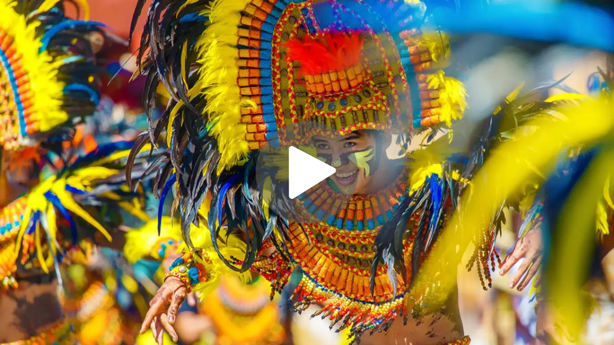
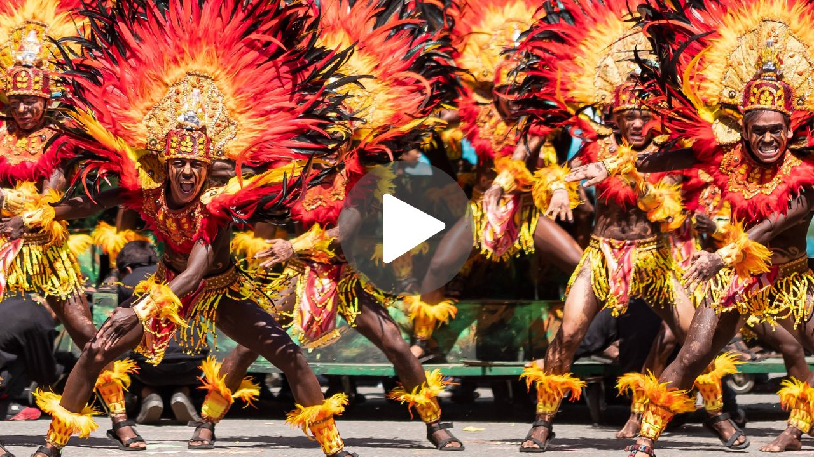
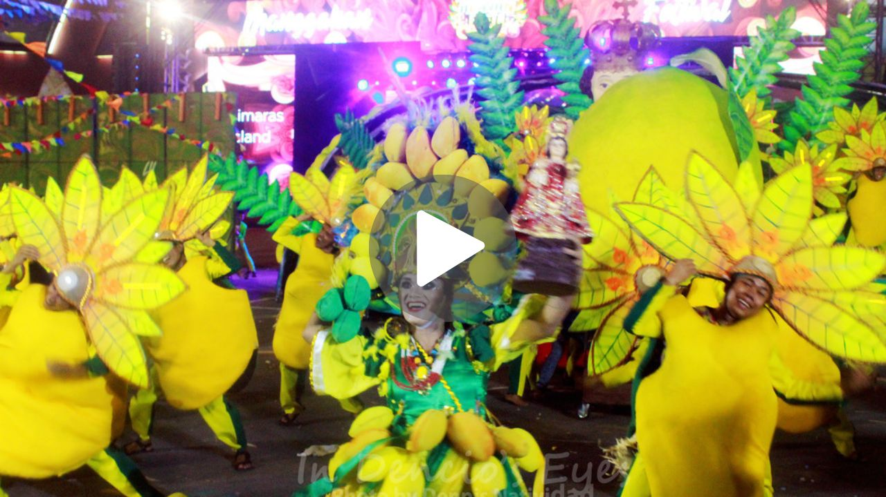
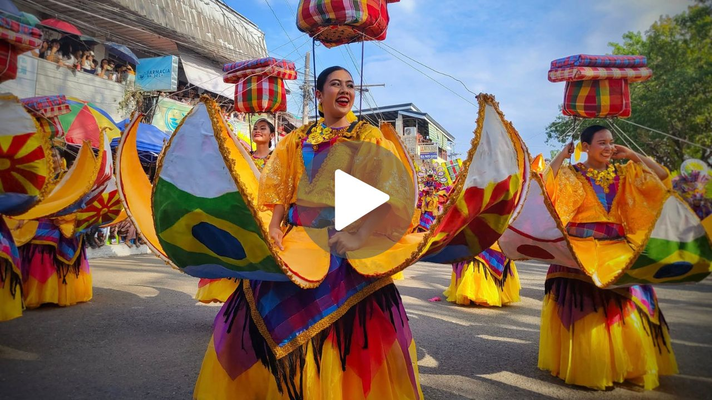
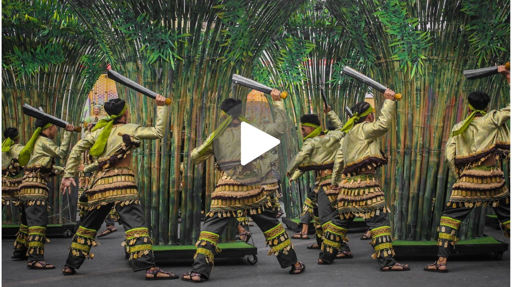

Most-Awaited Festivals in Western Visayas

|

|

|
|
|
|
|
Wait, there's more! This section features selected video highlights showcasing the vibrant performances, colorful costumes, and rich cultural traditions of each festival of Western Visayas. Experience the festivals in motion and enjoy!
| Ati-Atihan Festival |
 Ati-Atihan Festival Video This video shows the highlights of the colorful street dances of Ati-Atihan Festival in Kalibo, Aklan. |
| Dinagyang Festival |
 Dinagyang Festival Video This video features the vibrant and cinematic street performances of Dinagyang Festival in Iloilo. |
| Manggahan Festival |
 Manggahan Festival Video This video shows the energetic performances of participants during the Manggahan Festival of Guimaras. |
| Salakayan Festival |
 Salakayan Festival Video This video highlights one of the impressive performances during Salakayan Festival of Miagao, Iloilo. |
| Tultugan Festival |
 Tultugan Festival Video This video showcases the champion performance during Tultugan Festival of Maasin, Iloilo. |